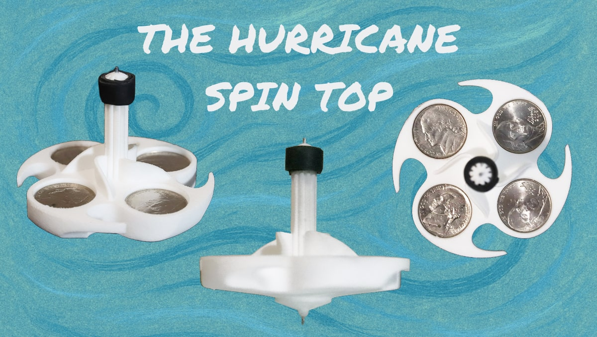
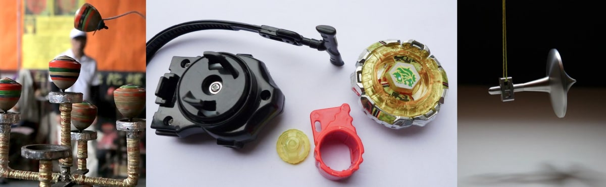
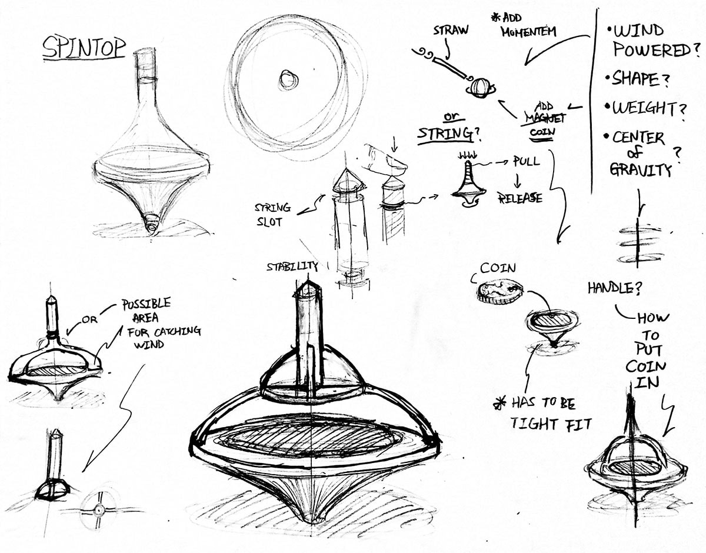
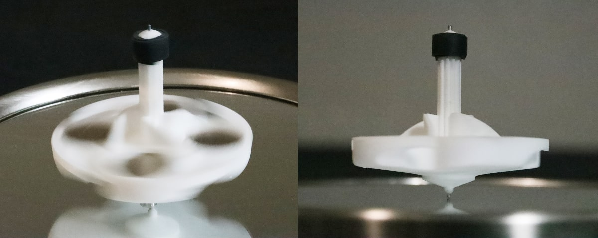

Experimenting with physics, form, and interactive wind-powered play
The Hurricane Spin Top is a playful, aerodynamic spinning toy designed to explore rotational energy, balance, and prolonged motion. Inspired by traditional string-powered tops and modern toys like Beyblades, this project centers around interactive engagement and physical performance.
Initially inspired by traditional rope-launched spinning tops, I wanted to investigate what design elements could extend spin duration. Researching the center of gravity in Beyblade toys helped guide design decisions. Instead of focusing on maximizing the initial spin force, I shifted attention toward sustaining rotation with external airflow.
Through early sketching, I introduced wing-like extensions to the top to catch air—allowing users to keep it spinning using a straw or air compressor. I added dime slots for adjustable weight distribution, improving rotational inertia, and used a metal tip to reduce friction. Texturing was added to the grip for better tactile control. The form was prototyped in ABS plastic and tested on glass surfaces.
In test conditions using just a manual hand spin, the top spun for over two minutes on a glass surface. With air-assisted input, the toy maintains motion indefinitely, making it a compelling experiment in sustained kinetic energy and user interaction.
This small-scale project deepened my understanding of physical balance, aerodynamics, and how minor form tweaks can radically impact performance. It also reinforced how product design can invite playful user interaction while staying rooted in material and mechanical exploration.